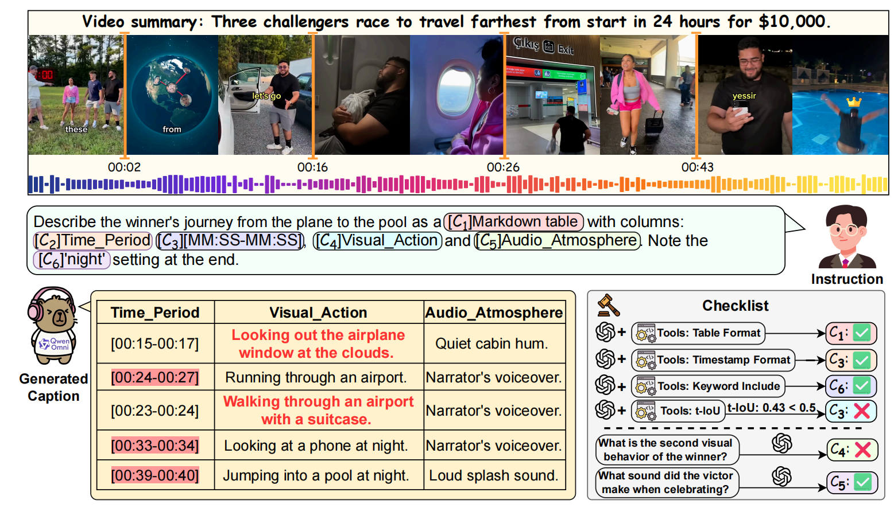
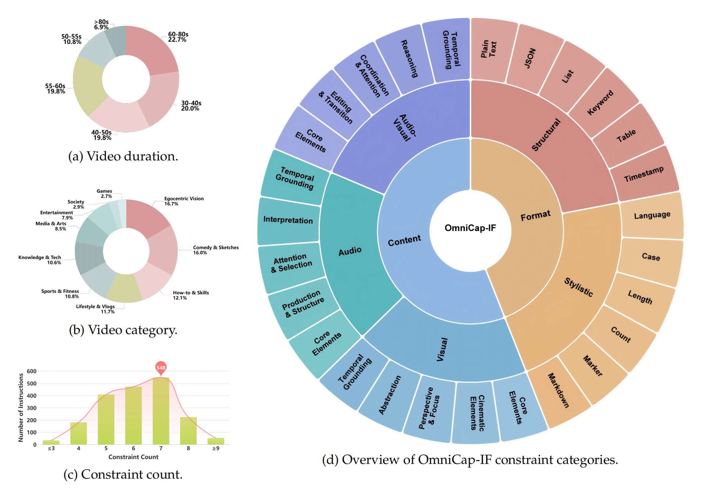
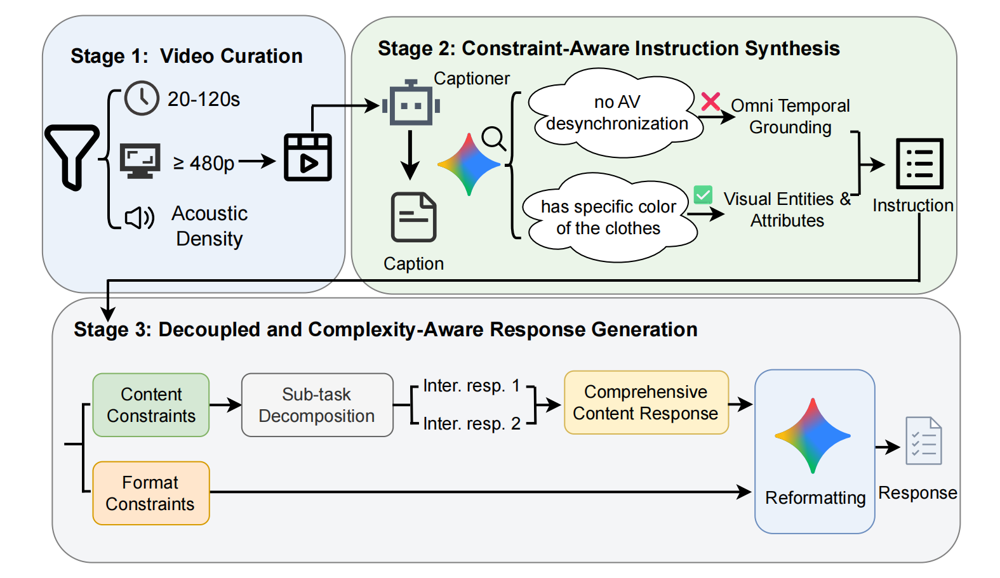
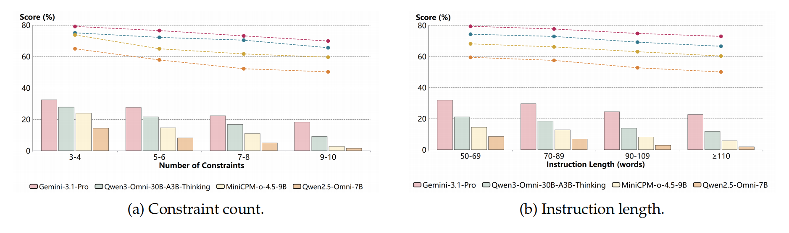
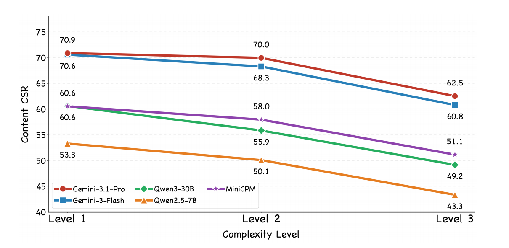
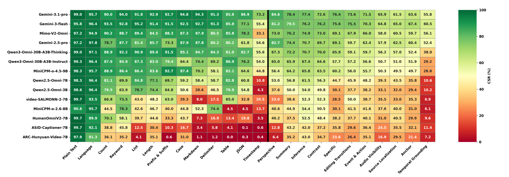

OmniCap-IF: Benchmarking and ImprovingInstruction Following Abilitiesfor Omni-Video Captioning

Abstract
Omni-modal Large Language Models can process audio and visual streams jointly, but their ability to strictly follow complex, multi-faceted user instructions remains underexplored. OmniCap-IF addresses this gap with a benchmark for controllable omni-video captioning that evaluates both structural format correctness and fine-grained content correctness.
OmniCap-IF contains 1,920 high-quality samples from 480 videos and spans 50 constraint types across format, visual, audio, and audio-visual modalities. The benchmark also incorporates temporal grounding to assess spatio-temporal precision. Based on a curated 54K instruction-tuning set, OmniCap-IF-54K, the OmniCaptioner-IF models improve both complex instruction adherence and general omni-modal captioning.

OmniCap-IF Benchmark
The constraint taxonomy separates objective structural requirements from semantic content requirements. Content constraints are further decomposed into visual, audio, and audio-visual dimensions, allowing the evaluation to diagnose where a model loses instruction fidelity.

OmniCap-IF-54K and OmniCaptioner-IF
OmniCap-IF-54K is a large-scale instruction-tuning dataset of 54K video-instruction-response triplets. Its generation pipeline decouples evaluation data from training data, filters videos for audio-visual richness, synthesizes constraint-aware instructions, and uses a decomposed response strategy to preserve content correctness under complex format requirements.

Leaderboard
Main evaluation results on OmniCap-IF. CSR denotes Constraint Satisfaction Rate and ISR denotes Instruction Satisfaction Rate.
| Model | Overall | Format | Content | ||||||
|---|---|---|---|---|---|---|---|---|---|
| CSR | ISR | CSR | ISR | CSR | ISR | Visual CSR | Audio CSR | AV CSR | |
| Human | 83.29 | 35.31 | 94.83 | 84.19 | 78.23 | 40.19 | 78.38 | 80.05 | 72.43 |
| Closed-Source Large Multimodal Models | |||||||||
| Gemini-3.1-Pro | 79.80 | 30.86 | 89.78 | 80.89 | 74.57 | 36.82 | 74.91 | 77.37 | 70.57 |
| Gemini-3-Flash | 78.70 | 29.04 | 85.75 | 74.17 | 75.01 | 37.26 | 75.20 | 76.73 | 71.67 |
| MiMo-V2-Omni | 74.59 | 22.18 | 81.55 | 67.28 | 70.93 | 31.84 | 70.92 | 73.60 | 67.85 |
| Gemini-2.5-Pro | 74.06 | 24.58 | 81.70 | 68.84 | 70.05 | 32.08 | 71.82 | 74.11 | 65.30 |
| Open-Source Large Multimodal Models | |||||||||
| Qwen3-Omni-30B-A3B-Thinking | 72.58 | 19.42 | 84.48 | 72.55 | 66.33 | 25.00 | 67.71 | 72.30 | 59.70 |
| Qwen3-Omni-30B-A3B-Instruct | 67.44 | 14.27 | 79.46 | 64.14 | 61.14 | 20.05 | 64.09 | 64.88 | 55.07 |
| MiniCPM-o-4.5-9B | 66.40 | 12.81 | 77.00 | 60.38 | 60.83 | 19.32 | 62.98 | 67.25 | 53.38 |
| Qwen2.5-Omni-7B | 57.44 | 7.55 | 66.78 | 46.52 | 52.54 | 12.76 | 57.13 | 57.14 | 44.18 |
| Qwen2.5-Omni-3B | 51.07 | 4.74 | 60.44 | 39.78 | 46.16 | 9.06 | 53.42 | 51.09 | 36.31 |
| video-SALMONN-2-7B | 44.58 | 1.88 | 47.80 | 23.99 | 42.89 | 6.05 | 47.28 | 48.94 | 34.86 |
| MiniCPM-o-2.6-8B | 43.39 | 1.67 | 40.85 | 18.07 | 44.72 | 6.58 | 51.26 | 49.88 | 37.14 |
| HumanOmniV2-7B | 41.85 | 2.40 | 37.86 | 18.18 | 43.95 | 7.10 | 51.04 | 48.16 | 36.54 |
| ASID-Captioner-7B | 33.87 | 1.04 | 22.70 | 7.74 | 39.72 | 6.20 | 48.45 | 46.48 | 30.50 |
| ARC-Hunyuan-Video-7B | 29.74 | 0.31 | 20.27 | 5.75 | 34.71 | 4.17 | 44.51 | 37.24 | 26.62 |
| Ours | |||||||||
| OmniCaptioner-IF-7B | 72.59 | 18.28 | 89.09 | 79.46 | 63.94 | 22.08 | 63.82 | 68.81 | 59.02 |
| OmniCaptioner-IF-3B | 69.09 | 13.28 | 86.78 | 74.96 | 59.81 | 16.93 | 61.57 | 64.25 | 54.04 |
Analysis
OmniCap-IF reveals a format-content tradeoff: as structural requirements become more complex, models often lose semantic fidelity. The benchmark also shows bottlenecks in JSON, timestamp formatting, editing transitions, temporal grounding, and modality anchoring.



Appendix Dataset Samples
All dataset samples from Appendix E are included below.
Data Sample 1 defensive play
Show prompts and checklists
{
"video_id": "001",
"prompt": "Analyze the defensive play scene around 00:08. Use a Markdown table with columns 'Timestamp', 'Visual Action', 'Audio Content', and 'Character State'. Record the exact moment the character blocks the ball, his spoken line \"Not in my house\", and his subsequent landing. If the landing produces a squishing sound, you must describe the process of his landing.",
"format_checks": [
{
"check_id": "format-001",
"constraint_id": "table",
"check_description": "Use a Markdown table with columns 'Timestamp', 'Visual Action', 'Audio Content', and 'Character State'.",
"parameters": {
"col_name": ["Timestamp", "Visual Action", "Audio Content", "Character State"]
}
}
],
"content_checks": [
{
"check_id": "content-001",
"constraint_id": "omni_events_actions",
"check_content": "Use a Markdown table with columns 'Visual Action', 'Audio Content', and 'Character State'.",
"questions": [
{
"question": "Does the response try to analyze the defensive play scene as required?",
"options": ["A. Yes", "B. No"],
"correct_answer": "A"
},
{
"question": "How does the character block the ball in the scene around 00:08?",
"options": ["A. He jumps high and swats the ball away", "B. He stands on the ground and grabs the ball", "C. He kicks the ball out of the air", "D. None of the above"],
"correct_answer": "A"
},
{
"question": "What is the character's state immediately after blocking the ball?",
"options": ["A. He falls to the ground", "B. He runs to the other side of the court", "C. He holds the ball while standing still", "D. None of the above"],
"correct_answer": "C"
},
{
"question": "What sound does the muscular man make during the landing?",
"options": ["A. Laughter", "B. Grunt", "C. Shout", "D. None of the above"],
"correct_answer": "D"
}
]
},
{
"check_id": "content-002",
"constraint_id": "visual_temporal_grounding",
"check_content": "Record the exact moment the character blocks the ball.",
"question": "According to the video, at what exact moment does the character block (grab) the ball?",
"correct_answer": "00:11"
},
{
"check_id": "content-003",
"constraint_id": "audio_temporal_grounding",
"check_content": "Record the exact moment of his spoken line 'Not in my house'.",
"question": "According to the video, when does the character start saying the line 'Not in my house'?",
"correct_answer": "00:13"
},
{
"check_id": "content-004",
"constraint_id": "omni_specific",
"check_content": "If the landing produces a squishing sound, describe the landing process.",
"questions": [
{
"question": "Does the response describe a landing process and explain a squishing sound?",
"options": ["A. Yes", "B. No"],
"correct_answer": "A"
},
{
"question": "Regarding the subsequent landing of the character who blocked the ball, which statement is factually correct?",
"options": ["A. He lands heavily, producing a loud squishing sound", "B. He lands softly on his toes", "C. He does not land because he did not jump to block the ball", "D. He lands simultaneously with Bugs Bunny"],
"correct_answer": "C"
},
{
"question": "Who actually hits the ground (lands) in the sequence?",
"options": ["A. The Crusher (the blocker)", "B. The referee", "C. Bugs Bunny", "D. None of the above"],
"correct_answer": "D"
}
]
}
]
}Data Sample 2 magician interaction
Show prompts and checklists
{
"video_id": "340",
"prompt": "Please analyze the initial interaction between the magician and the participant named Marlon. Use a JSON object to extract exactly two pieces of information: 'magician_request' (recognizing the specific words the magician says) and 'participant_compliance' (recording the participants' actions in detail).",
"format_checks": [
{
"check_id": "format-001",
"constraint_id": "json_object",
"check_description": "Use a JSON object to extract exactly two pieces of information: 'magician_request' and 'participant_compliance'.",
"parameters": {
"schema": {
"type": "object",
"properties": {
"magician_request": {"type": "string"},
"participant_compliance": {"type": "string"}
},
"required": ["magician_request", "participant_compliance"]
}
}
},
{
"check_id": "format-002",
"constraint_id": "count",
"check_description": "Extract exactly two pieces of information.",
"parameters": {"min_count": 2, "max_count": 2}
}
],
"content_checks": [
{
"check_id": "content-001",
"constraint_id": "audio_specific",
"check_content": "Recognize the specific words the magician says for 'magician_request'.",
"questions": [
{
"question": "Does the value for 'magician_request' contain quoted speech or a transcription of what the magician said?",
"options": ["A. Yes", "B. No"],
"correct_answer": "A"
},
{
"question": "Which quote accurately reflects the magician's initial request to the participant?",
"options": ["A. \"Can you hand me a one-dollar bill?\"", "B. \"I need you to give me a fifty.\"", "C. \"I want to do a trick with some money. You got your wallet?\"", "D. None of the above"],
"correct_answer": "C"
}
]
},
{
"check_id": "content-002",
"constraint_id": "visual_events_actions",
"check_content": "Record the participants' actions in detail for 'participant_compliance'.",
"questions": [
{
"question": "Does the value for 'participant_compliance' describe the physical movements or actions of the participant?",
"options": ["A. Yes", "B. No"],
"correct_answer": "A"
},
{
"question": "What specific actions does the participant take in response to the magician's request?",
"options": ["A. He retrieves his wallet and hands it to the magician", "B. He takes off his sunglasses and hands them to the magician", "C. He cuts a dollar bill in half with scissors", "D. None of the above"],
"correct_answer": "A"
}
]
}
]
}Data Sample 3 Cook once, eat twice
Show prompts and checklists
{
"video_id": "341",
"prompt": "Search for the 'Cook once, eat twice' segment. Output in ALL CAPS using '|' as a delimiter. First, provide the timestamp interval [MM:SS-MM:SS] where the text overlay matches the spoken phrase; second, describe the grill marks on the chicken; third, infer if the speaker is the dietitian or the narrator based on the voice texture.",
"format_checks": [
{
"check_id": "format-001",
"constraint_id": "case",
"check_description": "Output in ALL CAPS.",
"parameters": {"schema": "upper"}
},
{
"check_id": "format-002",
"constraint_id": "delimiter",
"check_description": "Use '|' as a delimiter.",
"parameters": {"symbol": "|"}
},
{
"check_id": "format-003",
"constraint_id": "timestamp_format",
"check_description": "Provide the timestamp interval [MM:SS-MM:SS].",
"parameters": {"format_type": "period"}
}
],
"content_checks": [
{
"check_id": "content-001",
"constraint_id": "omni_temporal_grounding",
"check_content": "Provide the timestamp interval where the text overlay matches the spoken phrase.",
"question": "According to the video, what is the timestamp interval where the text overlay 'Cook once, eat twice' appears and matches the spoken phrase?",
"correct_answer": "00:18 - 00:20"
},
{
"check_id": "content-002",
"constraint_id": "visual_specific",
"check_content": "Describe the grill marks on the chicken.",
"questions": [
{
"question": "Does the response attempt to describe the grill marks on the chicken?",
"options": ["A. Yes", "B. No"],
"correct_answer": "A"
},
{
"question": "Which pattern correctly describes the grill marks on the chicken in the identified segment?",
"options": ["A. Grid-like pattern", "B. A circular branded pattern", "C. A random, spotless browning", "D. None of the above"],
"correct_answer": "A"
}
]
},
{
"check_id": "content-003",
"constraint_id": "audio_inference",
"check_content": "Infer if the speaker is the dietitian or the narrator based on the voice texture.",
"questions": [
{
"question": "Does the response infer whether the speaker is the dietitian or the narrator?",
"options": ["A. Yes", "B. No"],
"correct_answer": "A"
},
{
"question": "Based on the voice texture, who is the speaker of the phrase 'Cook once, eat twice'?",
"options": ["A. The Dietitian (Cathy Deimeke)", "B. The Narrator", "C. A male chef", "D. Cannot be determined"],
"correct_answer": "B"
}
]
}
]
}Appendix Error Examples
Representative error examples from Appendix F are shown with the baseline output, error analysis, and OmniCaptioner-IF output.
Example 1 Rules of Padel
Caption by Qwen2.5-Omni-7B
{ "rule_text_overlay": { "start_time": "00:13", "end_time": "00:25", "content": "Ball has to hit floor first, play off side and back walls, thinking person's sport, easy to learn hard to master, play and have fun right away." }, "spoken_explanation": "The speaker explains the rules of padel, emphasizing that the ball must first hit the floor before being played off the walls, highlighting that it is a thinking person's sport that is easy to learn but hard to master, and encouraging players to have fun immediately.", "consistency_check": "The audio elaborates on the text by providing additional context and explanation about the rules and the nature of the game." }Error Analysis
- Instruction violation: the baseline summarized commentary instead of transcribing it.
- Content error: it hallucinated visual overlay text such as "thinking person's sport".
- Format violation: it over-complicated the schema with a nested object rather than simple string fields.
Caption by OmniCaptioner-IF-7B
{ "rule_text_overlay": "START WITH UNDERHAND SERVE, BALL HAS TO HIT FLOOR FIRST, PLAY OFF SIDE AND BACK WALLS", "spoken_explanation": "You start with an underhand serve. After you serve, the ball has to bounce onto the turf, and you can play off the walls and play off the side.", "consistency_check": "The audio elaborates on the rules by providing specific instructions on the serve and the bounce requirement, whereas the text overlays are static visual labels." }Example 2 first-person perspective
Caption by Qwen2.5-Omni-7B
1. I am frustrated with the woman in the white blouse. She is constantly interrupting me, and I feel like she doesn't understand my situation. This is evident from the timestamp [00:00.00] to [00:05.00]. 2. The woman in red, wearing a striped top, interrupts me again. She seems to be trying to get my attention, but I am not interested in her. This happens at the timestamp [00:05.00] to [00:10.00]. 3. I return to my dramatic monologue, expressing my belief in myself and my determination to succeed. This is shown at the timestamp [00:10.00] to [00:20.00].
Error Analysis
- Format violation: the baseline used Arabic numerals instead of Roman numeral list markers.
- Format violation: it produced ranges with milliseconds instead of [MM:SS] timestamps.
- Content error: it misattributed the interruption and hallucinated the woman's intent.
Caption by OmniCaptioner-IF-7B
I. [00:00] I am walking through the room when I hear the woman in the white blouse shouting at me to go away, which is incredibly frustrating because I've only just come back from a long journey. II. [00:05] Suddenly, the woman in the red pants and striped top bursts through the door, shouting "Monica!" and interrupting my thoughts, causing me to stop and turn around in disbelief. III. [00:14] I quickly regain my composure and resume my dramatic monologue, gesturing wildly with my hands to emphasize my point about being the breadwinner and how my self-belief is being undermined.
Example 3 jeep scene
Caption by Qwen2.5-Omni-7B
[ { "time_range": "00:36:44-00:37:00", "visual_shot": "A man wearing sunglasses and making hand gestures", "audio_line": "I drink your milkshake", "editing_note": "No cuts" } ]Error Analysis
- Temporal error: the baseline used malformed and hallucinated timestamps.
- Audio hallucination: it output the unrelated quote "I drink your milkshake".
- Editing error: it missed the actual cut.
- Instruction violation: it ignored source localization and lip synchronization.
Caption by OmniCaptioner-IF-7B
[ { "time_range": "[00:20-00:28]", "visual_shot": "The character wears dark sunglasses and gestures with his right hand while sitting in the driver's seat of a jeep.", "audio_line": "See here I'm now by myself, talking to myself. That's, that's chaos theory.", "editing_note": "The scene uses a medium shot with a slight cut to a close-up as the character begins his explanation." } ] The lip movements of the character are perfectly synchronized with the audio, confirming the source is the character in the jeep.Example 4 audio anchor
Caption by Qwen2.5-Omni-3B
Empty row Timestamp | Audio Trigger | Visual Action | Speaker Visible 00:00:00.00 | Let's say that you just made a whole tray of absolutely delicious bacon | Chef holds up a piece of bacon | True 00:00:00.00 | and after removing all of said bacon you're left with a whole lot of delicious bacon fat | Chef places the bacon on a paper towel | True 00:00:00.00 | now you could just wait till it hardens and then throw it in the trash but that would be a waste or you could save it in a jar | Chef pours bacon fat into a jar | True ...(repeat the above two lines until truncated)
Error Analysis
- Audio anchoring failure: the baseline ignored the specific trigger phrases.
- Temporal collapse: every row was assigned 00:00:00.00.
- Generation failure: the output degenerated into a repeated loop.
Caption by OmniCaptioner-IF-3B
| Audio Trigger | Visual Action | Speaker Visible | Timestamp | | Boiling water | The chef pours the bacon grease into a glass jar and then uses his right hand to swirl the mixture inside the jar. | True | [00:21] | | Refrigerator | The chef places the sealed jar upside down into the refrigerator. | True | [00:31] | | Bacon fat | The chef pours the liquid from the jar into a metal bowl. | True | [00:35] |
Citation
@article{wang2026omnicapif,
title = {OmniCap-IF: Benchmarking and Improving Instruction Following Abilities for Omni-Video Captioning},
author = {Wang, Jiahao and Ping, An and Wang, Yanghai and Zhang, Yuanxing and Li, Shihao and Bian, Hanyan and Ren, Yichi and Zhang, Yize and Wang, Han and Chen, Haowen and Li, Junze and Wang, Jiaqi and Hu, Yiyang and Xu, Zhuze and Zhang, Zijie and Liu, Jiaheng},
journal = {Preprint},
year = {2026}
}